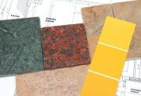

Northwest Tile Consulting successfully guides you through the design, selection and installation process - directing your project toward a well designed, technically sound installation that withstands the tests of hard use and close scrutiny.
Owner Tom Coates has over 30 years of field experience that can help guide your project for results you will be proud of.
{% comment %} {% endcomment %}  Many varieties of styles, sizes, shapes, colors and textures of ceramic tile and stone are available today. The choice of multiple tile characteristics, combined with a wide variety of installation techniques, can make the selection process daunting for the homeowner as well as the seasoned professional.
Thomas Coates - Senior Tile ConsultantAs a tile contractor and a general contractor, I have been dealing with these and other questions for more than thirty years. Most clients have no idea the impact that a particular tile choice would have on the correct layout, trim to be used, or method of installation necessary with each project. Northwest Tile Consulting’s objective is to aid with our expert advice, saving your valuable time.
Northwest Tile Consulting takes your project seriously as we consider the details of your job.
Interested in our services? Contact us today!
{kind=link}
{kind=link}
{kind=link}